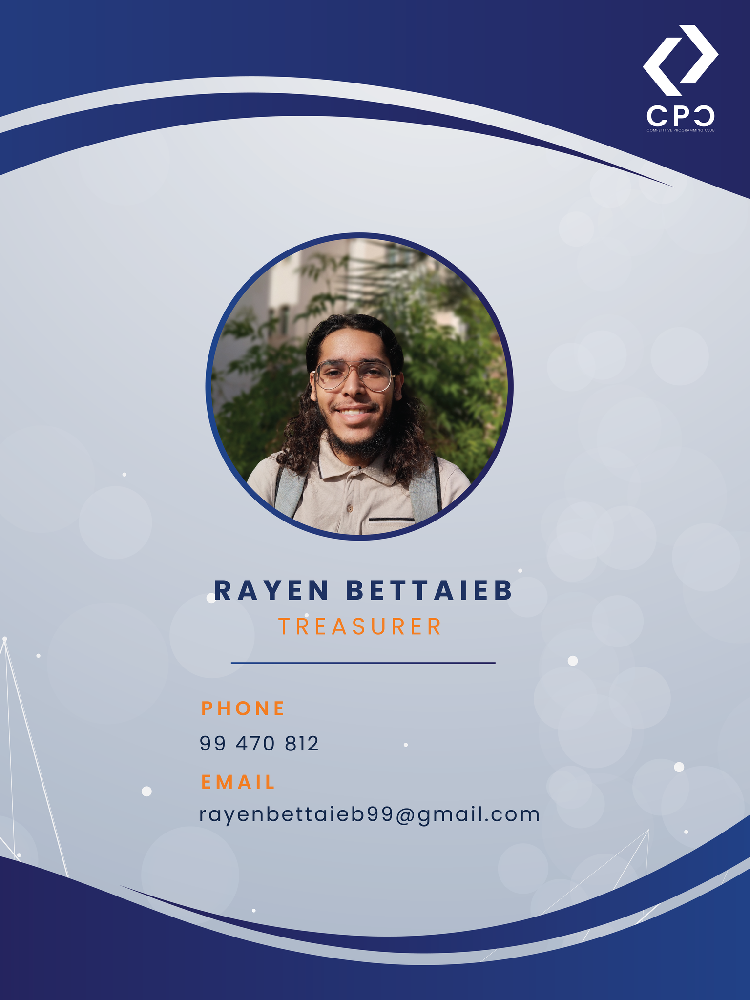
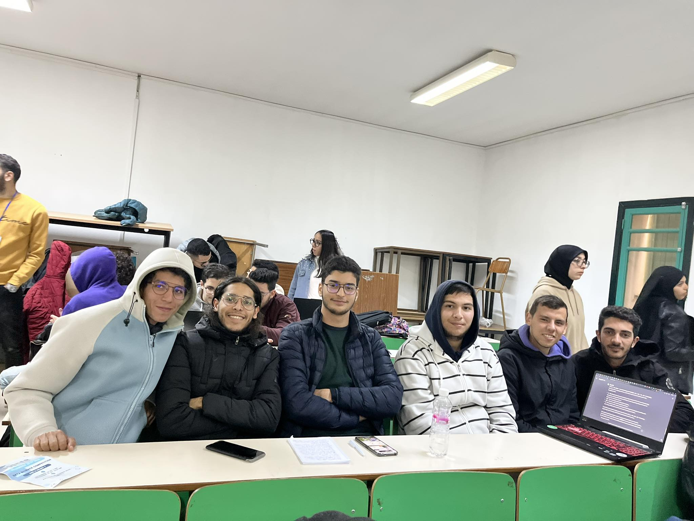

Mon activites Académique

Département Logistique: Competitive Programming Club
Année : 2024
Établissement : Faculté Des Sciences Sfax
Participation à l’organisation d’événements, workshops et compétitions de programmation.
Trésorier : Competitive Programming Club
Année : 2023
Établissement : Faculté Des Sciences Sfax
Conception d’un système de suivi financier Excel toujours utilisé par le club. Gestion du budget et organisation des ressources.

Membre: Google Developers Student Club
Année : 2022
Établissement : Faculté Des Sciences Sfax
Participation à des Solution Challenges avec des projets basés sur l’intelligence artificielle dans les domaines de l’agriculture et de la santé.
